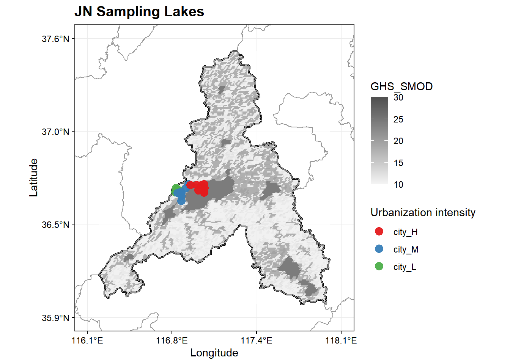
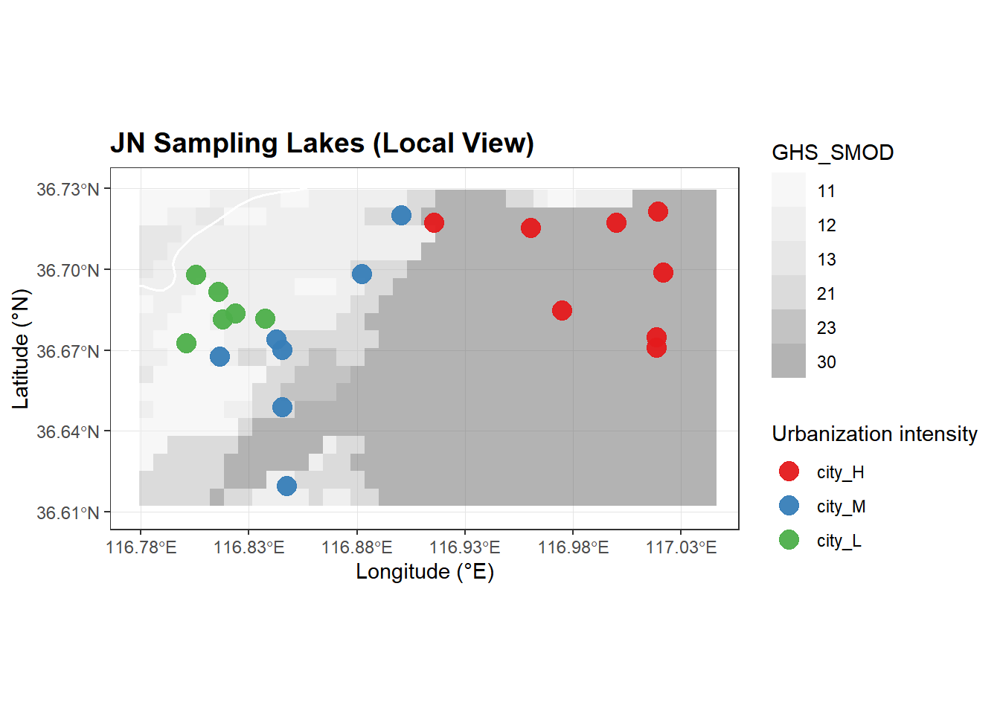

# 这里写你的 R 代码
library(ggplot2)
library(sf)
library(dplyr)
library(terra)
library(tidyterra)📌 1. 教程简介与环境配置
本教程展示如何使用 R 语言中最新的sf（矢量）和terra（栅格）生态链，自动匹配特定城市的空间边界与大范围的 TIF 遥感影像，并结合湖泊采样点数据，绘制学术出版级质量的城市宏观总图与局部放大细节图。
🌟 核心亮点
- 全自动智能化：只需修改一个城市代码开关（如
JN），后续行政边界提取、TIF 智能切片匹配全自动运行。 - 坐标轴完美防重叠：通过动态计算
breaks，彻底解决coord_sf在小范围放大时经纬度标签重叠挤压的痛点。 - 健壮性容错：内置国内常见 GIS 数据中“行政区划边界经纬度反转”的自动诊断与修复逻辑。
首先，加载研究所需的核心空间分析与可视化包：
# 【请在此处填入你的本地数据路径】
china_map <- st_read("D:/1work/2city/light/raw_data/行政区划/shi2022.shp", quiet = TRUE)
lake_data <- read.csv("D:/1work/2city/light/raw_data/湖泊总.csv")
tif_dir <- "D:/1work/2city/light/raw_data/tif/"
# 🌟【核心切换开关】：想画哪个城市，直接改这里，后续全自动运行！
target_city <- "JN"💾 2. 数据读取与路径配置
⚠️ 读者注：请根据你本地电脑的实际存放路径修改以下变量。
# 【请在此处填入你的本地数据路径】
china_map <- st_read("D:/1work/2city/light/raw_data/行政区划/shi2022.shp", quiet = TRUE)
lake_data <- read.csv("D:/1work/2city/light/raw_data/湖泊总.csv")
tif_dir <- "D:/1work/2city/light/raw_data/tif/"
# 🌟【核心切换开关】：想画哪个城市，直接改这里，后续全自动运行！
target_city <- "JN"🧹 3. 数据清洗与因子顺序锁定
为了保证地图上图例的学术规范性（例如按城镇化强度从高到低：H -> M -> L 排序），我们需要对非结构化的属性数据进行因子化（Factor）处理，并将所有矢量统一转换至全球通用的 WGS84 (EPSG:4326) 经纬度投影。
# 统一转换为经纬度投影
china_map_4326 <- st_transform(china_map, crs = 4326)
# 动态过滤并显式锁定图例显示顺序：city_H -> city_M -> city_L
df_current <- lake_data %>%
filter(City_Name == target_city) %>%
mutate(City_Group = factor(City_Group, levels = c("city_H", "city_M", "city_L")))
# 转换为 sf 空间矢量对象
df_current_sf <- st_as_sf(df_current, coords = c("Centroid_X", "Centroid_Y"), crs = 4326)🤖 4. 行政边界智能合成与经纬度反转诊断
在处理国内部分来源不明的 Shapefile 时，经常会遇到经纬度颠倒（X/Y 错位）导致画图移到北极或南极的问题。本段代码实现了自动盲检与拨乱反正。
# 自动寻找并合并当前城市的完整“区划轮廓模具”
current_boundary <- china_map_4326[st_intersects(china_map_4326, df_current_sf, sparse = FALSE) %>% rowSums() > 0, ] %>%
st_union()
# 自动诊断当前城市的 shp 边界是否存在【经纬度颠倒】问题
bbox_check <- st_bbox(current_boundary)
if (mean(c(bbox_check[["xmin"]], bbox_check[["xmax"]])) < mean(c(bbox_check[["ymin"]], bbox_check[["ymax"]]))) {
cat("⚠️ 警告：检测到当前城市 administrative shp 存在经纬度反转问题，正在全自动拨乱反正...\n")
current_boundary <- st_flip_coordinates(current_boundary)
}
# 确保转换为标准的 terra 矢量对象
city_vector_4326 <- vect(current_boundary)🔍 5. 大范围 TIF 栅格数据的“智能裁剪与有效性匹配”
当面对海量分块的遥感 TIF 影像（如城市化权重数据）时，盲目合并极度消耗内存。
本算法的逻辑是：先盲检几何外框是否相交 ➡️ 再执行空间试切 ➡️ 统计切出区域内是否有非 NA 的有效像素。 只有真正提供数据的 TIF 块才会被加载。
tif_files <- list.files(tif_dir, pattern = "\\.tif$", full.names = TRUE)
raster_list <- lapply(tif_files, rast)
selected_raster_4326 <- NULL
for (i in seq_along(raster_list)) {
r <- raster_list[[i]]
r_4326 <- project(r, "EPSG:4326", method = "near")
# 步骤 A：几何外框相交检测
is_intersected <- is.related(ext(r_4326), city_vector_4326, "intersects")
if (is_intersected) {
# 步骤 B：试切并检查空值
test_crop <- crop(r_4326, city_vector_4326)
valid_pixels <- sum(!is.na(values(test_crop)))
if (valid_pixels > 0) {
selected_raster_4326 <- r_4326
cat(paste0("📊 智能匹配成功！", target_city, " 在第 ", i, " 个 TIF 中找到了 ", valid_pixels, " 个有效城镇化像素。\n"))
break
} else {
cat(paste0("ℹ️ 提示：第 ", i, " 个 TIF 虽然几何相交，但在 ", target_city, " 范围内全是空白(NA)，自动跳过...\n"))
}
}
}ℹ️ 提示：第 3 个 TIF 虽然几何相交，但在 JN 范围内全是空白(NA)，自动跳过...
📊 智能匹配成功！JN 在第 4 个 TIF 中找到了 63484 个有效城镇化像素。if (is.null(selected_raster_4326)) {
stop("❌ 错误：在所有 TIF 文件夹中，都没有找到能在该城市范围内提供【有效像素值】的影像！")
}📐 6. 动态范围计算与安全空间裁剪
为了生成“总图”和“放大细节图”两个不同的视角，我们需要动态计算各自的边界框（Bounding Box），并扩展一定的缓冲空间（Padding）防止切边
# 1. 动态计算【局部放大】的经纬度边界框
bbox_points <- st_bbox(df_current_sf)
x_point_padding <- (bbox_points[["xmax"]] - bbox_points[["xmin"]]) * 0.1
y_point_padding <- (bbox_points[["ymax"]] - bbox_points[["ymin"]]) * 0.1
local_xlim <- c(bbox_points[["xmin"]] - x_point_padding, bbox_points[["xmax"]] + x_point_padding)
local_ylim <- c(bbox_points[["ymin"]] - y_point_padding, bbox_points[["ymax"]] + y_point_padding)
local_extent_4326 <- ext(local_xlim[1], local_xlim[2], local_ylim[1], local_ylim[2])
# 2. 动态计算【总图锁定】的经纬度边界
bbox_city <- st_bbox(current_boundary)
x_city_padding <- (bbox_city[["xmax"]] - bbox_city[["xmin"]]) * 0.05
y_city_padding <- (bbox_city[["ymax"]] - bbox_city[["ymin"]]) * 0.05
city_xlim <- c(bbox_city[["xmin"]] - x_city_padding, bbox_city[["xmax"]] + x_city_padding)
city_ylim <- c(bbox_city[["ymin"]] - y_city_padding, bbox_city[["ymax"]] + y_city_padding)
# --- 执行安全裁剪与后处理 ---
smod_macro_cropped <- crop(selected_raster_4326, city_vector_4326)
smod_local_cropped <- crop(selected_raster_4326, local_extent_4326)
smod_macro_smooth <- resample(smod_macro_cropped, smod_macro_cropped, method = "bilinear")
names(smod_macro_smooth) <- "SMOD_Value"
smod_macro_masked <- mask(smod_macro_smooth, city_vector_4326)
names(smod_local_cropped) <- "SMOD_Class"
smod_local_4326 <- suppressWarnings(as.factor(smod_local_cropped))
gray_colors <- c(
"11" = "#F0F0F0", "12" = "#E0E0E0", "13" = "#D0D0D0",
"21" = "#B8B8B8", "22" = "#A0A0A0", "23" = "#888888",
"30" = "#686868", "NA" = "transparent"
)🎨 7. 高级学术绘图展现
🗺️ 绘图 1：宏观总图 (多城市自适应版)
该版本核心在于通过 seq(…, length.out = 4) 控制无论城市大或小，横纵轴都只精简地产生 4 个刻度，并配合 °E / °N 后缀，达到国际期刊发表标准。
#1. 🌟【核心算法】：无论城市大小，横纵轴都只雷打不动地切出 4 个均匀的刻度位置
x_breaks_nc <- seq(from = city_xlim[1], to = city_xlim[2], length.out = 4)
y_breaks_nc <- seq(from = city_ylim[1], to = city_ylim[2], length.out = 4)
# 2. 动态格式化标签：保留 1 位小数，并优雅地贴上地理方位后缀
x_labels_nc <- paste0(sprintf("%.1f", x_breaks_nc), "°E")
y_labels_nc <- paste0(sprintf("%.1f", y_breaks_nc), "°N")
# 3. 开始标准学术绘图
ggplot() +
# 渲染城市内部显示的平滑栅格
geom_spatraster(data = smod_macro_masked, maxcell = Inf, alpha = 0.75) +
scale_fill_gradient(low = "#F5F5F5", high = "#505050",
name = "GHS_SMOD", na.value = "transparent") +
# 叠加黑色高亮当前城市的行政轮廓边界与背景底图
geom_sf(data = current_boundary, fill = NA, color = "black", linewidth = 0.8) +
geom_sf(data = china_map_4326, fill = NA, color = "gray60", linewidth = 0.4) +
# 叠加采样点
geom_point(data = df_current, aes(x = Centroid_X, y = Centroid_Y, color = City_Group),
size = 3.5, alpha = 0.95) +
# ✨ 干净回归：coord_sf 只做裁剪，不掺杂任何破坏轴标签的过时参数
coord_sf(xlim = city_xlim, ylim = city_ylim, crs = 4326) +
# ✨【核心控框】：把算好的南昌风格稀疏刻度和标签强行注入坐标轴
scale_x_continuous(breaks = x_breaks_nc, labels = x_labels_nc) +
scale_y_continuous(breaks = y_breaks_nc, labels = y_labels_nc) +
# 颜色与图例顺序美化
scale_color_manual(
values = c("city_H" = "#E41A1C", "city_M" = "#377EB8", "city_L" = "#4DAF4A"),
name = "Urbanization intensity"
) +
theme_bw() +
labs(
title = paste(target_city, "Sampling Lakes"),
x = "Longitude", y = "Latitude" # 严格修正：X轴是经度，Y轴是纬度
) +
theme(
plot.title = element_text(face = "bold", size = 14),
panel.grid.major = element_line(color = "gray92", linewidth = 0.3),
panel.grid.minor = element_blank(), # 关掉次要网格线，画面更高级
legend.position = "right",
# ✨【视觉瘦身】：文字保持完美的水平正向(angle=0)，通过字号(9)和刻度总数控制，绝对不会重叠
axis.text.x = element_text(size = 9, color = "black"),
axis.text.y = element_text(size = 9, color = "black"),
axis.ticks = element_line(color = "black", linewidth = 0.4)
)
🔍 绘图 2：局部放大图 (完美不重叠标准版)
在放大到高精度的局部尺度时，传统的自动坐标轴极易发生重叠混乱。我们通过在 scale_*_continuous 中使用 by = 0.05 手动控制步长间隔，完美避开字体挤压问题
ggplot() +
geom_spatraster(data = smod_local_4326, maxcell = Inf, alpha = 0.5) +
scale_fill_manual(values = gray_colors, name = "GHS_SMOD", na.value = "transparent") +
geom_sf(data = china_map_4326, fill = NA, color = "white", linewidth = 0.6) +
geom_point(data = df_current, aes(x = Centroid_X, y = Centroid_Y, color = City_Group),
size = 4.5, alpha = 0.95) +
coord_sf(xlim = local_xlim, ylim = local_ylim, crs = 4326) +
scale_x_continuous(
breaks = seq(from = round(local_xlim[1], 2), to = round(local_xlim[2], 2), by = 0.05)
) +
scale_y_continuous(
breaks = seq(from = round(local_ylim[1], 2), to = round(local_ylim[2], 2), by = 0.03)
) +
scale_color_manual(
values = c("city_H" = "#E41A1C", "city_M" = "#377EB8", "city_L" = "#4DAF4A"),
name = "Urbanization intensity"
) +
theme_bw() +
labs(
title = paste(target_city, "Sampling Lakes (Local View)"),
x = "Longitude (°E)",
y = "Latitude (°N)"
) +
theme(
plot.title = element_text(face = "bold", size = 14),
panel.grid.major = element_line(color = "gray90", linewidth = 0.3),
legend.position = "right",
axis.text.x = element_text(size = 9),
axis.text.y = element_text(size = 9)
)
🏁 8. 结语与讨论
通过这种基于 bbox 动态范围缩放与局部像素有效性匹配的方案，你可以放心地将顶部的 target_city 更改为任何你数据集里拥有的城市代码（例如从 “JN” 改为 “NC”），代码将会自动解构、匹配并生成对应的高质量规范地图。